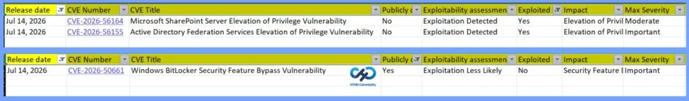
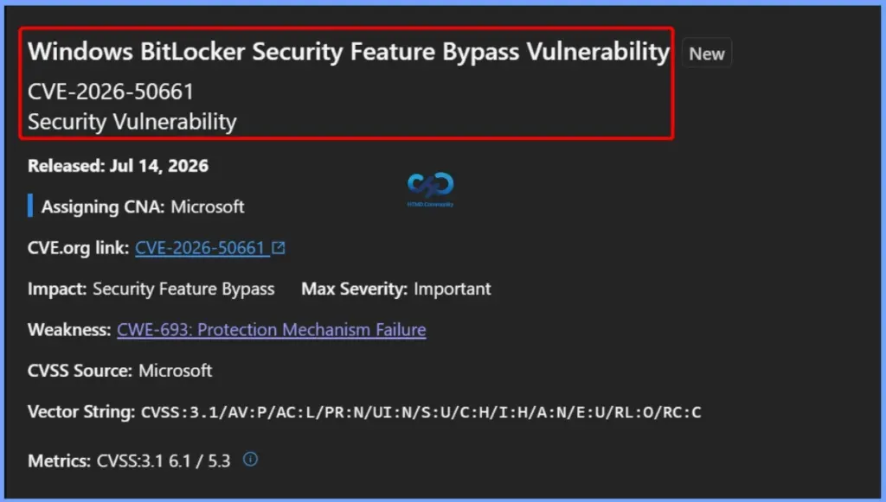
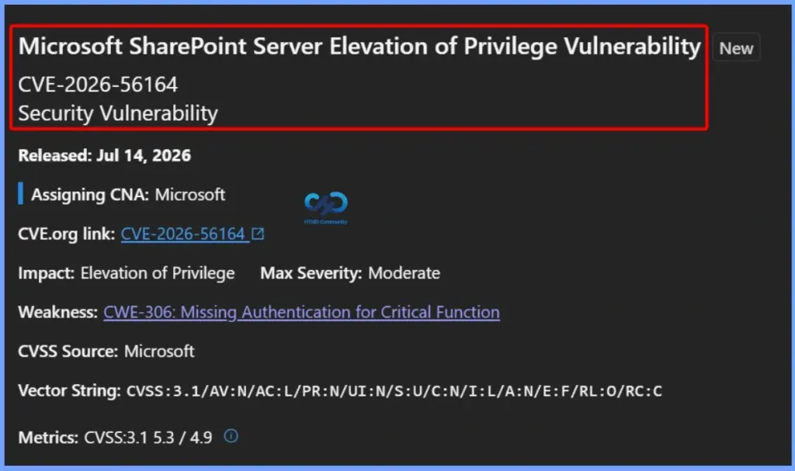
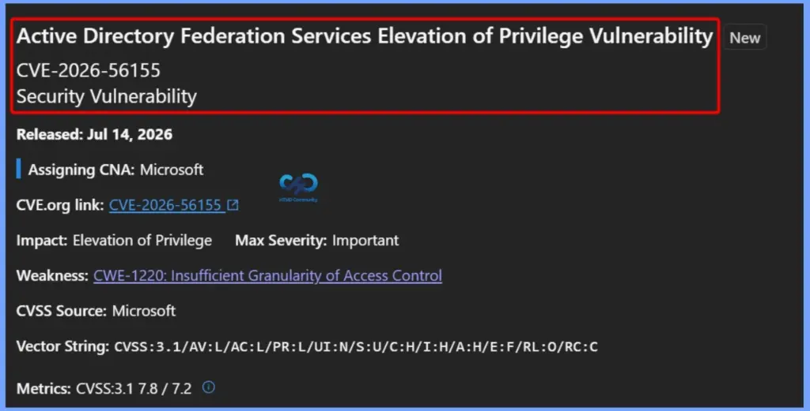
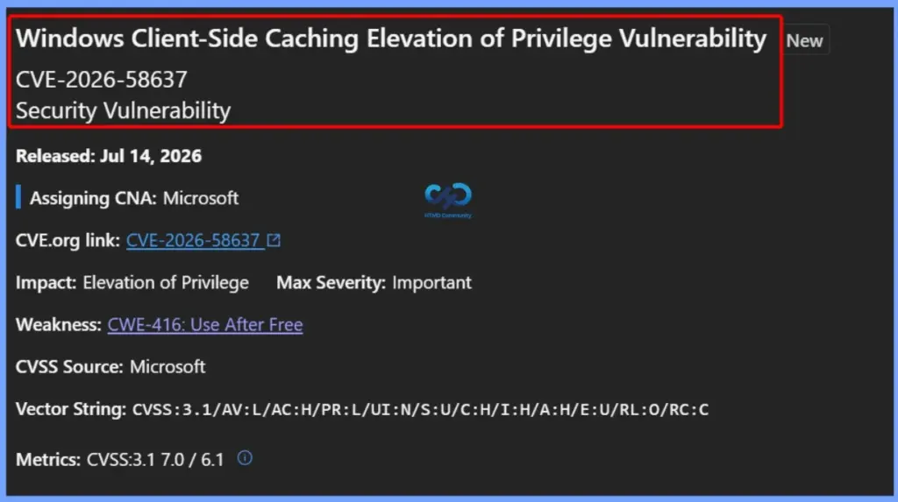
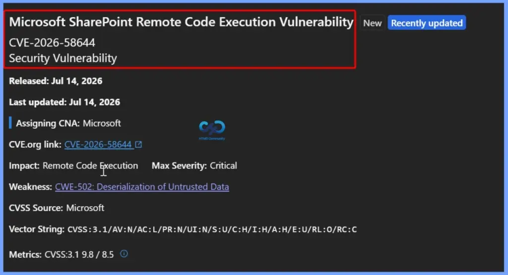
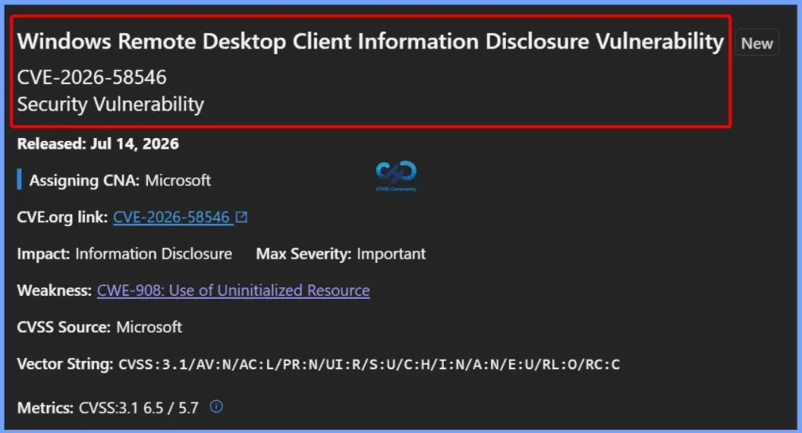
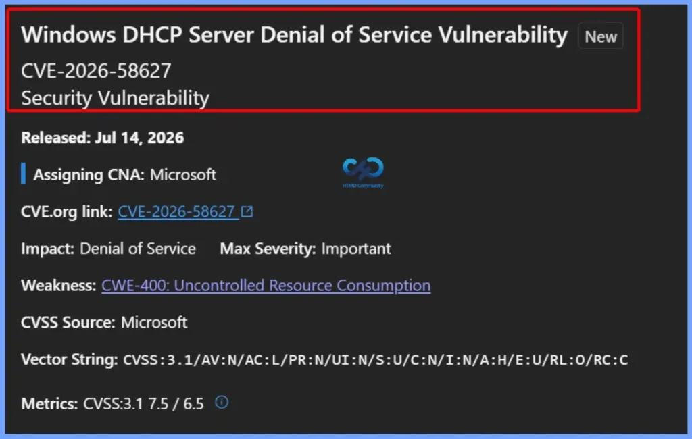
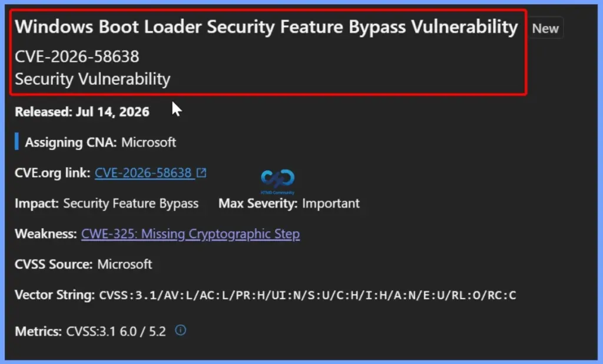
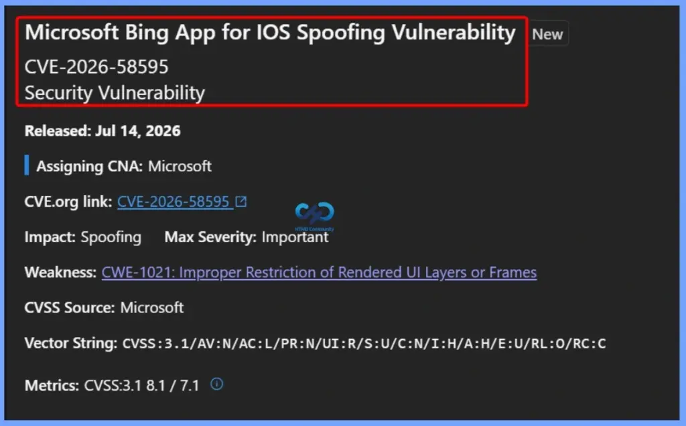

Key Takeaways
- Microsoft fixed a record-breaking 570 security vulnerabilities in the July 2026 Patch Tuesday release.
- The updates include 2 actively exploited zero-day vulnerabilities and 1 publicly disclosed zero-day.
- Microsoft addressed 59 Critical vulnerabilities, with 48 being Remote Code Execution (RCE) vulnerabilities.
- Elevation of Privilege (254) vulnerabilities make up the largest category of fixes, followed by 145 Remote Code Execution vulnerabilities.
- The reported 570 vulnerabilities include only the security updates released on July 2026 Patch Tuesday and exclude products that received fixes earlier in the month, such as Azure OpenAI, Microsoft 365 Copilot, and Microsoft Exchange Online.
Microsoft Fixes 570 Security Vulnerabilities and 3 Zero-Day Vulnerabilities in July 2026 Patch Tuesday! Microsoft fixed 3 zero-day vulnerabilities as part of the July 2026 Patch Tuesday updates. Two of them, CVE-2026-56164 (Microsoft SharePoint Server Elevation of Privilege) and CVE-2026-56155 (Active Directory Federation Services Elevation of Privilege), were actively exploited before the security updates were released. Organizations using these products should install the updates as soon as possible. The third zero-day, CVE-2026-50661 (Windows BitLocker Security Feature Bypass Vulnerability), was publicly disclosed before Patch Tuesday but was not actively exploited.
Table of Content
Microsoft Fixes 570 Security Vulnerabilities and 3 Zero-Day Vulnerabilities in July 2026 Patch Tuesday
Microsoft’s July 2026 Patch Tuesday security updates address a total of 570 vulnerabilities across Windows and other Microsoft products. The largest category of fixes is Elevation of Privilege vulnerabilities, followed by Remote Code Execution and Information Disclosure vulnerabilities. The updates also include fixes for Security Feature Bypass, Denial of Service, and Spoofing vulnerabilities.
- 254 Elevation of Privilege Vulnerabilities
- 145 Remote Code Execution Vulnerabilities
- 102 Information Disclosure Vulnerabilities
- 35 Denial of Service Vulnerabilities
- 17 Security Feature Bypass Vulnerabilities
- 16 Spoofing Vulnerabilities
| Release Date | CVE Number | CVE Title | Publicly disclosed | Exploitability assessment | Exploited |
|---|---|---|---|---|---|
| Jul 14, 2026 | CVE-2026-50661 | Windows BitLocker Security Feature Bypass Vulnerability | Yes | Exploitation Less Likely | No |
| Jul 14, 2026 | CVE-2026-56164 | Microsoft SharePoint Server Elevation of Privilege Vulnerability | No | Exploitation Detected | Yes |
| Jul 14, 2026 | CVE-2026-56155 | Active Directory Federation Services Elevation of Privilege Vulnerability | No | Exploitation Detected | Yes |

CVE-2026-50661 – Windows BitLocker Security Feature Bypass Vulnerability
CVE-2026-50661 is an Important security feature bypass vulnerability affecting Windows BitLocker. It was released by Microsoft as part of the July 14, 2026 Patch Tuesday security updates. This vulnerability is classified under CWE-693: Protection Mechanism Failure, which means it could allow an attacker to bypass BitLocker security protections under certain conditions.

Microsoft Fixes CVE-2026-56164 SharePoint Server Elevation of Privilege Vulnerability
Microsoft has released a security update for CVE-2026-56164, an Elevation of Privilege (EoP) vulnerability affecting Microsoft SharePoint Server as part of the July 14, 2026 Patch Tuesday security updates. The vulnerability is rated Moderate with a CVSS 3.1 score of 5.3 and is associated with CWE-306: Missing Authentication for Critical Function.

Active Directory Federation Services Elevation of Privilege Vulnerability – CVE-2026-56155
Microsoft has released a security update for CVE-2026-56155, an Important Elevation of Privilege vulnerability affecting Active Directory Federation Services (AD FS). This vulnerability is caused by CWE-1220: Insufficient Granularity of Access Control, where access control mechanisms do not sufficiently restrict privileged operations.

254 Elevation of Privilege Vulnerabilities
Microsoft fixed several Elevation of Privilege (EoP) vulnerabilities in the July 2026 Patch Tuesday release. Some notable vulnerabilities include CVE-2026-49171 (Windows Speech Runtime), CVE-2026-49170 (Windows StateRepository API Server File), CVE-2026-49168 (Storage Spaces Direct), CVE-2026-49167 (Windows Kernel), and CVE-2026-49166 (Windows Print Configuration). All of these vulnerabilities are rated Important by Microsoft.
- CVE-2026-58637 Windows Client-Side Caching Elevation of Privilege Vulnerability
- CVE-2026-58636 Microsoft PC Manager Elevation of Privilege Vulnerability
- CVE-2026-58635 Windows Narrator Braille Elevation of Privilege Vulnerability
- CVE-2026-58634 Desktop Window Manager Elevation of Privilege Vulnerability
- CVE-2026-58633 Desktop Window Manager Elevation of Privilege Vulnerability
- CVE-2026-58632 Windows Win32 Kernel Subsystem Elevation of Privilege Vulnerability
- CVE-2026-58629 DirectX Graphics Kernel Elevation of Privilege Vulnerability
- CVE-2026-58628 Windows Wireless Network Manager Elevation of Privilege Vulnerability
- CVE-2026-58619 Windows Sensor Data Service Elevation of Privilege Vulnerability
- CVE-2026-58617 M365 Copilot for iOS Elevation of Privilege Vulnerability
- CVE-2026-58613 Windows Cloud Files Mini Filter Driver Elevation of Privilege Vulnerability
- CVE-2026-58602 Windows Kernel-Mode Driver Elevation of Privilege Vulnerability
- CVE-2026-58601 Virtual Hard Disk (VHD) Miniport Driver Elevation of Privilege Vulernability
- CVE-2026-58547 Windows Universal Plug and Play (UPnP) Device Host Elevation of Privilege Vulnerability CVE-2026-58544 Windows Management Services Elevation of Privilege Vulnerability
- CVE-2026-58543 Universal Print Management Service Elevation of Privilege Vulnerability
- CVE-2026-58541 Microsoft DWM Core Library Elevation of Privilege Vulnerability
- CVE-2026-58540 Windows Installer Elevation of Privilege Vulnerability
- CVE-2026-58538 Windows Bluetooth Service Elevation of Privilege Vulnerability
- CVE-2026-58537 Microsoft NAT Helper Components (ipnathlp.dll) Elevation of Privilege Vulnerability
- CVE-2026-58536 Windows Cloud Files Mini Filter Driver Elevation of Privilege Vulnerability
- CVE-2026-58534 Windows Input Method Editor (IME) Elevation of Privilege Vulnerability
- CVE-2026-58532 Windows Kernel Elevation of Privilege Vulnerability
- CVE-2026-58531 Windows SMB Elevation of Privilege Vulnerability
- CVE-2026-58527 Windows Runtime Elevation of Privilege Vulnerability
- CVE-2026-58526 Windows Storage Elevation of Privilege Vulnerability
- CVE-2026-58279 Azure CycleCloud Elevation of Privilege Vulnerability
- CVE-2026-58277 Microsoft SharePoint Elevation of Privilege Vulnerability
- CVE-2026-57969 Azure CycleCloud Elevation of Privilege Vulnerability
- CVE-2026-57968 Windows Subsystem for Linux (WSL2) Kernel Elevation of Privilege Vulnerability
- CVE-2026-57107 Windows Admin Center Elevation of Privilege Vulnerability
- CVE-2026-57096 Windows Routing and Remote Access Service (RRAS) Elevation of Privilege Vulnerability CVE-2026-57095 Win32k Elevation of Privilege Vulnerability
- CVE-2026-57093 Windows Ancillary Function Driver for WinSock Elevation of Privilege Vulnerability
- CVE-2026-57092 Microsoft Windows VMSwitch Elevation of Privilege Vulnerability
- CVE-2026-57091 Windows File History Service Elevation of Privilege Vulnerability
- CVE-2026-57088 Extensible Storage Engine (ESENT) Elevation of Privilege Vulnerability
- CVE-2026-56650 Windows Network File System Elevation of Privilege Vulnerability
- CVE-2026-56648 Windows NFS Server Elevation of Privilege Vulnerability
- CVE-2026-56647 Windows Remote Access Service Infrastructure Elevation of Privilege Vulnerability
- CVE-2026-56644 DirectX Graphics Kernel Elevation of Privilege Vulnerability
- CVE-2026-56643 DirectX Graphics Kernel Elevation of Privilege Vulnerability
- CVE-2026-56194 Windows NFS Server Elevation of Privilege Vulnerability
- CVE-2026-56187 Windows MIDI Service Module Elevation of Privileges Vulnerability
- CVE-2026-56183 Windows MIDI Service Module Elevation of Privileges Vulnerability
- CVE-2026-56182 Windows NTFS Elevation of Privilege Vulnerability
- CVE-2026-56178 Microsoft Defender for Endpoint for Mac Elevation of Privilege Vulnerability
- CVE-2026-56176 Windows Win32k Elevation of Privilege Vulnerability
- CVE-2026-56175 Windows NTFS Elevation of Privilege Vulnerability
- CVE-2026-56173 Windows WebView Elevation of Privilege Vulnerability
- CVE-2026-56169 Windows Admin Center Elevation of Privilege Vulnerability
- CVE-2026-56164 Microsoft SharePoint Server Elevation of Privilege Vulnerability
- CVE-2026-56155 Active Directory Federation Services Elevation of Privilege Vulnerability
- CVE-2026-55052 Microsoft SharePoint Elevation of Privilege Vulnerability
- CVE-2026-55014 Windows Remote Help Defense Elevation of Privilege Vulnerability
- CVE-2026-55009 Microsoft Exchange Server Elevation of Privilege Vulnerability
- CVE-2026-55006 Microsoft Exchange Server Elevation of Privilege Vulnerability
- CVE-2026-55004 Windows Print Configuration Elevation of Privilege Vulnerability
- CVE-2026-55002 Microsoft SQL Server Elevation of Privilege Vulnerability
- CVE-2026-55001 Active Directory Domain Services Elevation of Privilege Vulnerability
- CVE-2026-55000 Windows USB Print Driver Elevation of Privilege Vulnerability
- CVE-2026-54996 Windows USB Print Driver Elevation of Privilege Vulnerability
- CVE-2026-54991 Windows USB Print Driver Elevation of Privilege Vulnerability
- CVE-2026-54989 Quality Windows Audio/Video Experience (QWAVE) Elevation of Privilege Vulnerability CVE-2026-54987 Windows Overlay Filter Elevation of Privilege Vulnerability
- CVE-2026-54986 Windows Win32k Elevation of Privilege Vulnerability
- CVE-2026-54132 Windows Kernel Elevation of Privilege Vulnerability
- CVE-2026-54129 Windows Hyper-V Elevation of Privilege Vulnerability
- CVE-2026-54127 Windows Hyper-V Elevation of Privilege Vulnerability
- CVE-2026-54125 Windows Runtime Elevation of Privilege Vulnerability
- CVE-2026-54121 Active Directory Certificate Services Elevation of Privilege Vulnerability
- CVE-2026-54115 Windows Message Queuing (MSMQ) Elevation of Privilege Vulnerability
- CVE-2026-54114 Windows Win32k Elevation of Privilege Vulnerability
- CVE-2026-54112 Windows Win32k Elevation of Privilege Vulnerability
- CVE-2026-54111 Universal Print Management Service Elevation of Privilege Vulnerability
- CVE-2026-54107 Windows Win32k Elevation of Privilege Vulnerability
- CVE-2026-50697 Windows Common Log File System Driver Elevation of Privilege Vulnerability
- CVE-2026-50692 Desktop Window Manager Elevation of Privilege Vulnerability
- CVE-2026-50689 Windows Clipboard Server Elevation of Privilege Vulnerability
- CVE-2026-50688 Windows Win32k Elevation of Privilege Vulnerability
- CVE-2026-50687 Windows Win32k Elevation of Privilege Vulnerability
- CVE-2026-50683 Windows DHCP Client Elevation of Privilege Vulnerability
- CVE-2026-50680 Windows Hyper-V Elevation of Privilege Vulnerability
- CVE-2026-50679 Windows Search Service Elevation of Privilege Vulnerability
- CVE-2026-50677 Windows Media Elevation of Privilege Vulnerability
- CVE-2026-50676 Windows Media Elevation of Privilege Vulnerability
- CVE-2026-50674 Windows USB Print Driver Elevation of Privilege Vulnerability
- CVE-2026-50673 Windows Kernel Elevation of Privilege Vulnerability
- CVE-2026-50672 Windows NTFS Elevation of Privilege Vulnerability
- CVE-2026-50670 Windows Win32k Elevation of Privilege Vulnerability
- CVE-2026-50669 Windows Telephony Server Elevation of Privilege Vulnerability
- CVE-2026-50668 Windows Resilient File System (ReFS) Elevation of Privilege Vulnerability
- CVE-2026-50667 Windows Common Log File System Driver Elevation of Privilege Vulnerability
- CVE-2026-50666 Windows Remote Access Elevation of Privilege Vulnerability
- CVE-2026-50658 Microsoft Defender for Endpoint for Mac Elevation of Privilege Vulnerability
- CVE-2026-50650 .NET Framework Elevation of Privilege Vulnerability
- CVE-2026-50509 Wireless Wide Area Network Service (WwanSvc) Elevation of Privilege Vulnerability
- CVE-2026-50503 Windows Runtime Elevation of Privilege Vulnerability
- CVE-2026-50500 Windows Netlogon Elevation of Privilege Vulnerability
- CVE-2026-50499 Windows Print Spooler Elevation of Privilege Vulnerability
- CVE-2026-50498 Windows Universal Disk Format File System Driver (UDFS) Elevation of Privilege Vulnerability
- CVE-2026-50493 DirectX Graphics Kernel Elevation of Privilege Vulnerability
- CVE-2026-50491 Code Integrity DLL (ci.dll) Elevation of Privilege Vulnerability
- CVE-2026-50490 Windows Installer Elevation of Privilege Vulnerability
- CVE-2026-50489 Win32k Elevation of Privilege Vulnerability
- CVE-2026-50488 Clipboard User Service Elevation of Privilege Vulnerability
- CVE-2026-50487 Windows DNS Client Elevation of Privilege Vulnerability
- CVE-2026-50486 Windows Runtime Elevation of Privilege Vulnerability
- CVE-2026-50484 Windows Kernel Elevation of Privilege Vulnerability
- CVE-2026-50480 Windows Web Proxy Auto-Discovery Protocol (WPAD) Elevation of Privilege Vulnerability CVE-2026-50479 Windows USB Hub Driver Elevation of Privilege Vulnerability
- CVE-2026-50478 Windows Kernel Elevation of Privilege Vulnerability
- CVE-2026-50477 Windows Kernel Elevation of Privilege Vulnerability
- CVE-2026-50476 Windows Network Connections Service Elevation of Privilege Vulnerability
- CVE-2026-50469 Windows Projected File System Elevation of Privilege Vulnerability
- CVE-2026-50466 Microsoft Brokering File System Elevation of Privilege Vulnerability
- CVE-2026-50462 Windows Ancillary Function Driver for WinSock Elevation of Privilege Vulnerability
- CVE-2026-50460 Windows Runtime Elevation of Privilege Vulnerability
- CVE-2026-50459 Windows Kernel Elevation of Privilege Vulnerability
- CVE-2026-50458 Microsoft Brokering File System Elevation of Privilege Vulnerability
- CVE-2026-50457 Windows Runtime Elevation of Privilege Vulnerability
- CVE-2026-50454 Windows User Interface Core Elevation of Privilege Vulnerability
- CVE-2026-50452 Windows Runtime Elevation of Privilege Vulnerability
- CVE-2026-50451 Windows Routing and Remote Access Service (RRAS) Elevation of Privilege Vulnerability CVE-2026-50450 Windows Network Connections Service Elevation of Privilege Vulnerability
- CVE-2026-50449 Windows Runtime Elevation of Privilege Vulnerability
- CVE-2026-50444 Windows Server Update Service (WSUS) Elevation of Privilege Vulnerability
- CVE-2026-50441 Windows Resilient File System (ReFS) Elevation of Privilege Vulnerability
- CVE-2026-50440 Windows Audio Service Elevation of Privilege Vulnerability
- CVE-2026-50438 Microsoft PC Manager Elevation of Privilege Vulnerability
- CVE-2026-50436 Windows Kernel Elevation of Privilege Vulnerability
- CVE-2026-50435 Windows Overlay Filter Elevation of Privilege Vulnerability
- CVE-2026-50433 Windows Media Elevation of Privilege Vulnerability
- CVE-2026-50427 Content Delivery Manager Elevation of Privilege Vulnerability
- CVE-2026-50425 Windows Internal System User Profile Elevation of Privilege Vulnerability
- CVE-2026-50423 Windows Kernel Elevation of Privilege Vulnerability
- CVE-2026-50422 Windows NTFS Elevation of Privilege Vulnerability
- CVE-2026-50421 Windows Connected User Experiences and Telemetry Elevation of Privilege Vulnerability
- CVE-2026-50414 Windows Media Elevation of Privilege Vulnerability
- CVE-2026-50413 Windows Runtime Elevation of Privilege Vulnerability
- CVE-2026-50412 Windows NTFS Elevation of Privilege Vulnerability
- CVE-2026-50410 Windows Runtime Elevation of Privilege Vulnerability
- CVE-2026-50407 Windows Resilient File System (ReFS) Elevation of Privilege Vulnerability
- CVE-2026-50406 Windows Backup Engine Elevation of Privilege Vulnerability
- CVE-2026-50405 Windows Filtering Platform Elevation of Privilege Vulnerability
- CVE-2026-50404 Windows Media Elevation of Privilege Vulnerability
- CVE-2026-50403 Windows Runtime Elevation of Privilege Vulnerability
- CVE-2026-50402 NTFS Elevation of Privilege Vulnerability
- CVE-2026-50400 Windows App Package Installer Elevation of Privilege Vulnerability
- CVE-2026-50399 Windows Kernel Elevation of Privilege Vulnerability
- CVE-2026-50398 Windows Media Elevation of Privilege Vulnerability
- CVE-2026-50397 Windows Kernel Elevation of Privilege Vulnerability
- CVE-2026-50396 Windows Kernel-Mode Driver Elevation of Privilege Vulnerability
- CVE-2026-50393 Windows Kernel-Mode Driver Elevation of Privilege Vulnerability
- CVE-2026-50392 Windows Secure Kernel Mode Elevation of Privilege Vulnerability
- CVE-2026-50391 Windows Group Policy Elevation of Privilege Vulnerability
- CVE-2026-50390 Windows Kernel Elevation of Privilege Vulnerability
- CVE-2026-50387 Windows GDI Elevation of Privilege Vulnerability
- CVE-2026-50385 Windows Runtime Elevation of Privilege Vulnerability
- CVE-2026-50384 Windows Clip Service Elevation of Privilege Vulnerability
- CVE-2026-50379 Windows Media Elevation of Privilege Vulnerability
- CVE-2026-50378 Windows Key Guard Elevation of Privilege Vulnerability
- CVE-2026-50377 Windows Kernel Elevation of Privilege Vulnerability
- CVE-2026-50375 DirectX Graphics Kernel Elevation of Privilege Vulnerability
- CVE-2026-50374 Windows Cloud Files Mini Filter Driver Elevation of Privilege Vulnerability
- CVE-2026-50373 Windows Search Service Elevation of Privilege Vulnerability
- CVE-2026-50372 Windows Redirected Drive Buffering System Elevation of Privilege Vulnerability
- CVE-2026-50371 Windows LUA File Virtualization Filter Driver Elevation of Privilege Vulnerability
- CVE-2026-50369 Windows Remote Desktop Services Elevation of Privilege Vulnerability
- CVE-2026-50367 Windows Sensor Data Service Elevation of Privilege Vulnerability
- CVE-2026-50365 Remote Access Management service/API (RPC server) Elevation of Privilege Vulnerability
- CVE-2026-50364 Windows Backup Service Elevation of Privilege Vulnerability
- CVE-2026-50363 Windows Push Notifications Elevation of Privilege Vulnerability
- CVE-2026-50361 Microsoft Brokering File System Elevation of Privilege Vulnerability
- CVE-2026-50360 Windows SMB Server Elevation of Privilege Vulnerability
- CVE-2026-50359 Microsoft XML Core Services Elevation of Privilege Vulnerability
- CVE-2026-50358 Windows Media Elevation of Privilege Vulnerability
- CVE-2026-50356 Microsoft Windows App Store Elevation of Privilege Vulnerability
- CVE-2026-50354 Windows Kernel Elevation of Privilege Vulnerability
- CVE-2026-50353 DirectX Graphics Kernel Elevation of Privilege Vulnerability
- CVE-2026-50351 Windows Audio Compression Manager (ACM) Elevation of Privilege Vulnerability
- CVE-2026-50348 Windows Runtime Elevation of Privilege Vulnerability
- CVE-2026-50346 Netlogon RPC Elevation of Privilege Vulnerability
- CVE-2026-50345 Windows Runtime Elevation of Privilege Vulnerability
- CVE-2026-50344 Windows OLE Elevation of Privilege Vulnerability
- CVE-2026-50343 Microsoft Install Service Elevation of Privilege Vulnerability
- CVE-2026-50342 Windows MIDI Service Module Elevation of Privileges Vulnerability
- CVE-2026-50340 Windows Runtime Elevation of Privilege Vulnerability
- CVE-2026-50338 Azure Spring Apps Elevation of Privilege Vulnerability
- CVE-2026-50337 Windows Notification Elevation of Privilege Vulnerability
- CVE-2026-50336 Windows Media Elevation of Privilege Vulnerability
- CVE-2026-50335 Windows Operating Systems Elevation of Privilege Vulnerability
- CVE-2026-50333 Windows Spaceport.sys Elevation of Privilege Vulnerability
- CVE-2026-50332 Windows Kernel Elevation of Privilege Vulnerability
- CVE-2026-50331 Windows Application Model Core API Elevation of Privilege Vulnerability
- CVE-2026-50330 Windows Remote Desktop Client Elevation of Privilege Vulnerability
- CVE-2026-50329 Microsoft DWM Core Library Elevation of Privilege Vulnerability
- CVE-2026-50326 Windows Unified Consent System Elevation of Privilege Vulnerability
- CVE-2026-50325 Win32k Elevation of Privilege Vulnerability
- CVE-2026-50323 Windows Runtime Elevation of Privilege Vulnerability
- CVE-2026-50322 Windows Runtime Elevation of Privilege Vulnerability
- CVE-2026-50321 Windows USB Driver Elevation of Privilege Vulnerability
- CVE-2026-50318 Windows Resilient File System (ReFS) Elevation of Privilege Vulnerability
- CVE-2026-50317 Windows Operating Systems Elevation of Privilege Vulnerability
- CVE-2026-50315 Windows Image Acquisition Elevation of Privilege Vulnerability
- CVE-2026-50312 Windows Ancillary Function Driver for WinSock Elevation of Privilege Vulnerability
- CVE-2026-50311 Windows Server Elevation of Privilege Vulnerability
- CVE-2026-50307 Windows TCP/IP Elevation of Privilege Vulnerability
- CVE-2026-50306 Windows TCP/IP Elevation of Privilege Vulnerability
- CVE-2026-50305 Microsoft Brokering File System Elevation of Privilege Vulnerability
- CVE-2026-50298 Windows Spaceport.sys Elevation of Privilege Vulnerability
- CVE-2026-50297 Win32k Elevation of Privilege Vulnerability
- CVE-2026-50296 DirectX Graphics Kernel Elevation of Privilege Vulnerability
- CVE-2026-50293 Windows Internal Task Bar Elevation of Privilege Vulnerability
- CVE-2026-49808 Windows Kernel Elevation of Privilege Vulnerability
- CVE-2026-49806 Windows USB Print Driver Elevation of Privilege Vulnerability
- CVE-2026-49805 Win32k Elevation of Privilege Vulnerability
- CVE-2026-49804 Windows USB Video Driver Elevation of Privilege Vulnerability
- CVE-2026-49803 Windows AppX Deployment Extensions Elevation of Privilege Vulnerability
- CVE-2026-49802 Windows USB Print Driver Elevation of Privilege Vulnerability
- CVE-2026-49800 Windows Web Proxy Auto-Discovery Protocol (WPAD) Elevation of Privilege Vulnerability CVE-2026-49798 Windows Kernel Elevation of Privilege Vulnerability
- CVE-2026-49795 Windows Kernel Elevation of Privilege Vulnerability
- CVE-2026-49791 Windows Routing and Remote Access Service (RRAS) Elevation of Privilege Vulnerability
- CVE-2026-49790 Windows Universal Disk Format File System Driver (UDFS) Elevation of Privilege Vulnerability
- CVE-2026-49789 Windows NTFS Elevation of Privilege Vulnerability
- CVE-2026-49784 Microsoft Windows App Store Elevation of Privilege Vulnerability
- CVE-2026-49183 Windows Clipboard Server Elevation of Privilege Vulnerability
- CVE-2026-49181 Windows DHCP Client Elevation of Privilege Vulnerability
- CVE-2026-49176 Windows WalletService Elevation of Privilege Vulnerability
- CVE-2026-49175 Windows DNS Client Elevation of Privilege Vulnerability
- CVE-2026-49173 Windows Kernel Elevation of Privilege Vulnerability
- CVE-2026-49171 Windows Speech Runtime Elevation of Privilege Vulnerability
- CVE-2026-49170 Windows StateRepository API Server file Elevation of Privilege Vulnerability
- CVE-2026-49168 Storage Spaces Direct Elevation of Privilege Vulnerability
- CVE-2026-49167 Windows Kernel Elevation of Privilege Vulnerability
- CVE-2026-49166 Windows Print Configuration Elevation of Privilege Vulnerability
- CVE-2026-49162 Microsoft Brokering File System Elevation of Privilege Vulnerability
- CVE-2026-48581 Surface Broker SDMA Elevation of Privilege Vulnerability
- CVE-2026-48572 Windows App Package Installer Elevation of Privilege Vulnerability
- CVE-2026-48571 Windows App Package Installer Elevation of Privilege Vulnerability
- CVE-2026-47632 Azure Monitor Agent Metrics Extension Elevation of Privilege Vulnerability
- CVE-2026-47303 ASP.NET Core Elevation of Privilege Vulnerability
- CVE-2026-47301 Configuration Manager Elevation of Privilege Vulnerability
- CVE-2026-47300 ASP.NET Core Elevation of Privilege Vulnerability
- CVE-2026-47296 Microsoft SQL Server Elevation of Privilege Vulnerability
- CVE-2026-47295 Microsoft SQL Server Elevation of Privilege Vulnerability
- CVE-2026-44800 Windows Push Notifications Elevation of Privilege Vulnerability
- CVE-2026-42982 Windows Secure Kernel Mode Elevation of Privilege Vulnerability
- CVE-2026-42900 Microsoft Windows App Store Elevation of Privilege Vulnerability

145 Remote Code Execution Vulnerabilities
Microsoft fixed multiple Remote Code Execution (RCE) vulnerabilities in the July 2026 Patch Tuesday release. Notable vulnerabilities include CVE-2026-58644 (Microsoft SharePoint), CVE-2026-58640 (Windows NTFS), CVE-2026-58631 (Windows Admin Center), CVE-2026-58626 (Windows Remote Desktop Services), CVE-2026-58618 (Microsoft Excel), CVE-2026-58610 (Windows Media Foundation), CVE-2026-58609 (Windows Graphics Component), and CVE-2026-58608 (Windows Print Spooler).
- CVE-2026-58644 Microsoft SharePoint Remote Code Execution Vulnerability
- CVE-2026-58640 Windows NTFS Remote Code Execution Vulnerability
- CVE-2026-58631 Windows Admin Center (WAC) Remote Code Execution Vulnerability
- CVE-2026-58626 Windows Remote Desktop Services Remote Code Execution Vulnerability
- CVE-2026-58618 Microsoft Excel Remote Code Execution Vulnerability
- CVE-2026-58610 Microsoft Windows Media Foundation Remote Code Execution Vulnerability
- CVE-2026-58609 Windows Graphics Component Remote Code Execution Vulnerability
- CVE-2026-58608 Windows Print Spooler Remote Code Execution Vulnerability
- CVE-2026-58594 Remote Desktop Client Remote Code Execution Vulnerability
- CVE-2026-58542 Windows Media Remote Code Execution Vulnerability
- CVE-2026-58530 Windows Resilient File System (ReFS) Remote Code Execution Vulnerability
- CVE-2026-57094 Microsoft Windows Media Foundation Remote Code Execution Vulnerability
- CVE-2026-57090 Microsoft Windows Media Foundation Remote Code Execution Vulnerability
- CVE-2026-57089 Windows SMB Server Network Transport Driver (srvnet.sys) Remote Code Execution Vulnerability
- CVE-2026-57087 Microsoft Windows Media Foundation Remote Code Execution Vulnerability
- CVE-2026-56649 Windows Network File System Remote Code Execution Vulnerability
- CVE-2026-56642 Microsoft Fabric Data Warehouse Remote Code Execution Vulnerability
- CVE-2026-56197 Windows Admin Center (WAC) Remote Code Execution Vulnerability
- CVE-2026-56196 Windows Admin Center (WAC) Remote Code Execution Vulnerability
- CVE-2026-56190 Remote Desktop Protocol Remote Code Execution Vulnerability
- CVE-2026-56189 Microsoft Windows Media Foundation Remote Code Execution Vulnerability
- CVE-2026-56188 Windows Server Network driver Remote Code Execution Vulnerability
- CVE-2026-56159 DHCP Server Service Remote Code Execution Vulnerability
- CVE-2026-56156 Microsoft Excel Remote Code Execution Vulnerability
- CVE-2026-55949 Microsoft Excel Remote Code Execution Vulnerability
- CVE-2026-55948 Microsoft Excel Remote Code Execution Vulnerability
- CVE-2026-55947 Microsoft Excel Remote Code Execution Vulnerability
- CVE-2026-55944 Microsoft Dynamics NAV and Microsoft Dynamics 365 Business Central (On Premises) Remote Code Execution Vulnerability
- CVE-2026-55899 Microsoft Excel Remote Code Execution Vulnerability
- CVE-2026-55141 Microsoft Excel Remote Code Execution Vulnerability
- CVE-2026-55140 Microsoft Office Remote Code Execution Vulnerability
- CVE-2026-55137 Microsoft Excel Remote Code Execution Vulnerability
- CVE-2026-55136 Microsoft Excel Remote Code Execution Vulnerability
- CVE-2026-55134 Microsoft Word Remote Code Execution Vulnerability
- CVE-2026-55133 Microsoft OneNote Remote Code Execution Vulnerability
- CVE-2026-55132 Microsoft Word Remote Code Execution Vulnerability
- CVE-2026-55131 Microsoft Excel Remote Code Execution Vulnerability
- CVE-2026-55130 Microsoft Word Remote Code Execution Vulnerability
- CVE-2026-55129 Microsoft Office Remote Code Execution Vulnerability
- CVE-2026-55128 Microsoft Word Remote Code Execution Vulnerability
- CVE-2026-55127 Microsoft Word Remote Code Execution Vulnerability
- CVE-2026-55125 Microsoft Office Remote Code Execution Vulnerability
- CVE-2026-55123 Microsoft PowerPoint Remote Code Execution Vulnerability
- CVE-2026-55120 Microsoft PowerPoint Remote Code Execution Vulnerability
- CVE-2026-55058 Microsoft Excel Remote Code Execution Vulnerability
- CVE-2026-55056 Microsoft Office Remote Code Execution Vulnerability
- CVE-2026-55055 Microsoft Word Remote Code Execution Vulnerability
- CVE-2026-55053 Microsoft Excel Remote Code Execution Vulnerability
- CVE-2026-55049 Microsoft Office Remote Code Execution Vulnerability
- CVE-2026-55048 Microsoft Excel Remote Code Execution Vulnerability
- CVE-2026-55045 Microsoft Office Remote Code Execution Vulnerability
- CVE-2026-55044 Microsoft Excel Remote Code Execution Vulnerability
- CVE-2026-55043 Microsoft PowerPoint Remote Code Execution Vulnerability
- CVE-2026-55041 Microsoft Excel Remote Code Execution Vulnerability
- CVE-2026-55039 Microsoft Excel Remote Code Execution Vulnerability
- CVE-2026-55038 Microsoft Word Remote Code Execution Vulnerability
- CVE-2026-55037 Microsoft Excel Remote Code Execution Vulnerability
- CVE-2026-55036 Microsoft Excel Remote Code Execution Vulnerability
- CVE-2026-55033 Microsoft Word Remote Code Execution Vulnerability
- CVE-2026-55032 Microsoft Word Remote Code Execution Vulnerability
- CVE-2026-55031 Microsoft Excel Remote Code Execution Vulnerability
- CVE-2026-55029 Microsoft Excel Remote Code Execution Vulnerability
- CVE-2026-55025 Microsoft Excel Remote Code Execution Vulnerability
- CVE-2026-55024 Microsoft Excel Remote Code Execution Vulnerability
- CVE-2026-55022 Microsoft Office Remote Code Execution Vulnerability
- CVE-2026-55018 Microsoft Office Remote Code Execution Vulnerability
- CVE-2026-55017 Microsoft Office Remote Code Execution Vulnerability
- CVE-2026-55012 Microsoft Defender Remote Code Execution Vulnerability
- CVE-2026-55011 Microsoft Defender Remote Code Execution Vulnerability
- CVE-2026-55010 Minecraft Bedrock Dedicated Server Remote Code Execution Vulnerability
- CVE-2026-55005 Microsoft Exchange Server Remote Code Execution Vulnerability
- CVE-2026-54999 Windows TCP/IP Remote Code Execution Vulnerability
- CVE-2026-54995 Windows Reliable Multicast Transport Driver (RMCAST) Remote Code Execution Vulnerability
- CVE-2026-54993 Microsoft Windows Media Foundation Remote Code Execution Vulnerability
- CVE-2026-54992 Microsoft Message Queuing Queue Manager Remote Code Execution Vulnerability
- CVE-2026-54990 Remote Desktop Client Remote Code Execution Vulnerability
- CVE-2026-54982 Windows Reliable Multicast Transport Driver (RMCAST) Remote Code Execution Vulnerability
- CVE-2026-54131 Microsoft Excel Remote Code Execution Vulnerability
- CVE-2026-54128 Windows DHCP Client Remote Code Execution Vulnerability
- CVE-2026-54124 Windows Terminal Remote Code Execution Vulnerability
- CVE-2026-54122 Windows GDI+ Remote Code Execution Vulnerability
- CVE-2026-54118 Microsoft SQL Server Remote Code Execution Vulnerability
- CVE-2026-54117 Microsoft SQL Server Remote Code Execution Vulnerability
- CVE-2026-54109 Windows Resilient File System (ReFS) Remote Code Execution Vulnerability
- CVE-2026-50694 Windows Secure Socket Tunneling Protocol (SSTP) Remote Code Execution Vulnerability
- CVE-2026-50686 Windows OLE Remote Code Execution Vulnerability
- CVE-2026-50685 Windows DHCP Server Remote Code Execution Vulnerability
- CVE-2026-50675 Microsoft Excel Remote Code Execution Vulnerability
- CVE-2026-50663 Game: Age of Empires II: Definitive Edition Remote Code Execution Vulnerability
- CVE-2026-50655 Microsoft Windows Media Foundation Remote Code Execution Vulnerability
- CVE-2026-50649 .NET Remote Code Execution Vulnerability
- CVE-2026-50646 .NET Framework Remote Code Execution Vulnerability
- CVE-2026-50522 Microsoft SharePoint Remote Code Execution Vulnerability
- CVE-2026-50520 Visual Studio Code Remote Code Execution Vulnerability
- CVE-2026-50518 Windows DHCP Server Remote Code Execution Vulnerability
- CVE-2026-50510 GitHub Copilot Remote Code Execution Vulnerability
- CVE-2026-50505 Windows Message Queuing Service (MSMQ) Remote Code Execution Vulnerability
- CVE-2026-50502 Windows Event Logging Service Remote Code Execution Vulnerability
- CVE-2026-50501 Windows Resilient File System (ReFS) Remote Code Execution Vulnerability
- CVE-2026-50494 Windows NTFS Remote Code Execution Vulnerability
- CVE-2026-50492 Windows Resilient File System (ReFS) Remote Code Execution Vulnerability
- CVE-2026-50482 Windows NTFS Remote Code Execution Vulnerability
- CVE-2026-50474 Remote Desktop Client Remote Code Execution Vulnerability
- CVE-2026-50471 Windows NTFS Remote Code Execution Vulnerability
- CVE-2026-50467 Microsoft Office Remote Code Execution Vulnerability
- CVE-2026-50461 Windows NTFS Remote Code Execution Vulnerability
- CVE-2026-50448 Windows NTFS Remote Code Execution Vulnerability
- CVE-2026-50447 Windows Message Queuing Service (MSMQ) Remote Code Execution Vulnerability
- CVE-2026-50439 Microsoft Message Queuing Queue Manager Remote Code Execution Vulnerability
- CVE-2026-50426 Windows DNS Server Remote Code Execution Vulnerability
- CVE-2026-50417 Windows NTFS Remote Code Execution Vulnerability
- CVE-2026-50388 Windows NTFS Remote Code Execution Vulnerability
- CVE-2026-50386 Windows NTFS Remote Code Execution Vulnerability
- CVE-2026-50382 DirectX Graphics Kernel Remote Code Execution Vulnerability
- CVE-2026-50380 Windows GDI+ Remote Code Execution Vulnerability
- CVE-2026-50370 DHCP Server Service Remote Code Execution Vulnerability
- CVE-2026-50362 Windows Resilient File System (ReFS) Remote Code Execution Vulnerability
- CVE-2026-50357 Windows Resilient File System (ReFS) Elevation of Privilege Vulnerability
- CVE-2026-50347 Windows Data.dll Remote Code Execution Vulnerability
- CVE-2026-50327 Windows Media Remote Code Execution Vulnerability
- CVE-2026-50314 Microsoft Office Remote Code Execution Vulnerability
- CVE-2026-50313 Windows NTFS Remote Code Execution Vulnerability
- CVE-2026-50309 Windows NTFS Remote Code Execution Vulnerability
- CVE-2026-50308 Windows NTFS Remote Code Execution Vulnerability
- CVE-2026-50301 Microsoft Office Remote Code Execution Vulnerability
- CVE-2026-50299 Windows Storage Spaces Direct Remote Code Execution Vulnerability
- CVE-2026-49797 Windows NTFS Remote Code Execution Vulnerability
- CVE-2026-49796 Windows GDI+ Remote Code Execution Vulnerability
- CVE-2026-49793 Windows Resilient File System (ReFS) Remote Code Execution Vulnerability
- CVE-2026-49792 Windows Resilient File System (ReFS) Remote Code Execution Vulnerability
- CVE-2026-49184 Windows NTFS Remote Code Execution Vulnerability
- CVE-2026-49178 Windows Active Directory Domain Services Remote Code Execution Vulnerability
- CVE-2026-49172 Windows FTP Service Remote Code Execution Vulnerability
- CVE-2026-49169 Windows DNS Server Remote Code Execution Vulnerability
- CVE-2026-49164 Windows Active Directory Domain Services Remote Code Execution Vulnerability
- CVE-2026-48564 DHCP Server Service Remote Code Execution Vulnerability
- CVE-2026-48561 Microsoft Copilot Remote Code Execution Vulnerability
- CVE-2026-47642 Microsoft Excel Remote Code Execution Vulnerability
- CVE-2026-47305 Visual Studio Remote Code Execution Vulnerability
- CVE-2026-47290 Microsoft Office Remote Code Execution Vulnerability
- CVE-2026-42990 SQL Server ODBC driver Elevation of Privilege Vulnerability
- CVE-2026-42975 Windows Bluetooth Port Driver Remote Code Execution
- CVE-2026-40400 Windows PowerShell Remote Code Execution Vulnerability

102 Information Disclosure Vulnerabilities
Microsoft fixed several Information Disclosure vulnerabilities in the July 2026 Patch Tuesday release. Notable vulnerabilities affect Windows Remote Desktop Client, Remote Desktop Protocol (RDP), Active Directory Federation Services (ADFS), Windows USB Audio Class Driver, Windows Print Spooler, and Windows File Explorer. These vulnerabilities could allow attackers to access sensitive information if successfully exploited.
- CVE-2026-58546 Windows Remote Desktop Client Information Disclosure Vulnerability
- CVE-2026-58539 Windows Remote Desktop Client Information Disclosure Vulnerability
- CVE-2026-58535 Windows Remote Desktop Client Information Disclosure Vulnerability
- CVE-2026-58533 Windows Remote Desktop Client Information Disclosure Vulnerability
- CVE-2026-58529 Windows Active Directory Federation Services (ADFS) Information Disclosure Vulnerability
- CVE-2026-58528 Windows USB Audio Class Driver Information Disclosure Vulnerability
- CVE-2026-57982 Windows Remote Desktop Protocol (RDP) Information Disclosure Vulnerability
- CVE-2026-57979 Windows Remote Desktop Protocol (RDP) Information Disclosure Vulnerability
- CVE-2026-57085 Windows Print Spooler Information Disclosure Vulnerability
- CVE-2026-57084 Windows File Explorer Information Disclosure Vulnerability
- CVE-2026-57083 Windows Media Photo Codec Information Disclosure Vulnerability
- CVE-2026-56195 Microsoft Office Information Disclosure Vulnerability
- CVE-2026-56193 Microsoft Office Information Disclosure Vulnerability
- CVE-2026-56192 Microsoft Office Information Disclosure Vulnerability
- CVE-2026-56186 Windows Secure Channel Information Disclosure Vulnerability
- CVE-2026-56185 Windows Admin Center Information Disclosure Vulnerability
- CVE-2026-56184 Win32k Information Disclosure Vulnerability
- CVE-2026-55898 Microsoft Excel Information Disclosure Vulnerability
- CVE-2026-55142 Microsoft Word Information Disclosure Vulnerability
- CVE-2026-55139 Microsoft Office Information Disclosure Vulnerability
- CVE-2026-55138 Microsoft Excel Information Disclosure Vulnerability
- CVE-2026-55124 Microsoft Word Information Disclosure Vulnerability
- CVE-2026-55122 Microsoft Excel Information Disclosure Vulnerability
- CVE-2026-55121 Microsoft Office Information Disclosure Vulnerability
- CVE-2026-55057 Microsoft Office Information Disclosure Vulnerability
- CVE-2026-55054 Microsoft Excel Information Disclosure Vulnerability
- CVE-2026-55051 Microsoft SharePoint Server Information Disclosure Vulnerability
- CVE-2026-55050 Microsoft Word Information Disclosure Vulnerability
- CVE-2026-55047 Microsoft Office Information Disclosure Vulnerability
- CVE-2026-55046 Microsoft Excel Information Disclosure Vulnerability
- CVE-2026-55042 Microsoft Office Information Disclosure Vulnerability
- CVE-2026-55035 Microsoft Office Information Disclosure Vulnerability
- CVE-2026-55028 Microsoft Office Information Disclosure Vulnerability
- CVE-2026-55027 Microsoft Office Information Disclosure Vulnerability
- CVE-2026-55026 Microsoft Office Information Disclosure Vulnerability
- CVE-2026-55023 Microsoft Office Information Disclosure Vulnerability
- CVE-2026-55003 Windows Remote Desktop Protocol (RDP) Information Disclosure Vulnerability
- CVE-2026-54997 Windows SMB Information Disclosure Vulnerability
- CVE-2026-54988 Microsoft Excel Information Disclosure Vulnerability
- CVE-2026-54126 Windows Remote Desktop Protocol (RDP) Information Disclosure Vulnerability
- CVE-2026-54116 Microsoft SQL Server Information Disclosure Vulnerability
- CVE-2026-50690 Windows SMB Information Disclosure Vulnerability
- CVE-2026-50681 Windows Secure Channel Information Disclosure Vulnerability
- CVE-2026-50678 Microsoft Excel Information Disclosure Vulnerability
- CVE-2026-50665 Microsoft Office Information Disclosure Vulnerability
- CVE-2026-50657 Microsoft Defender for Endpoint for Mac Information Disclosure Vulnerability
- CVE-2026-50504 Windows Remote Desktop Client Information Disclosure Vulnerability
- CVE-2026-50497 Windows Remote Desktop Protocol (RDP) Information Disclosure Vulnerability
- CVE-2026-50496 Windows Network Policy Server SNMP Information Disclosure Vulnerability
- CVE-2026-50483 Windows Graphics Component Information Disclosure Vulnerability
- CVE-2026-50475 Windows Kernel Information Disclosure Vulnerability
- CVE-2026-50473 Windows File Explorer Information Disclosure Vulnerability
- CVE-2026-50470 Windows Network Policy Server SNMP Information Disclosure Vulnerability
- CVE-2026-50468 Microsoft SQL Server Information Disclosure Vulnerability
- CVE-2026-50463 Windows Kernel Information Disclosure Vulnerability
- CVE-2026-50456 Windows File Explorer Information Disclosure Vulnerability
- CVE-2026-50455 Universal Plug and Play (upnp.dll) Information Disclosure Vulnerability
- CVE-2026-50453 Windows USB Audio Class Driver Information Disclosure Vulnerability
- CVE-2026-50445 Windows Remote Desktop Protocol (RDP) Information Disclosure Vulnerability
- CVE-2026-50442 Windows File Explorer Information Disclosure Vulnerability
- CVE-2026-50437 Windows DWM Core Library Information Disclosure Vulnerability
- CVE-2026-50434 Windows Push Notification Information Disclosure Vulnerability
- CVE-2026-50431 Windows Quality of Service (QoS) Packet Scheduler Information Disclosure Vulnerability
- CVE-2026-50430 Windows Push Notification Information Disclosure Vulnerability
- CVE-2026-50429 Windows Kernel Information Disclosure Vulnerability
- CVE-2026-50428 Windows Container Isolation FS Filter Driver (unionfs.sys) Information Disclosure Vulnerability
- CVE-2026-50420 HTTP.sys Information Disclosure Vulnerability
- CVE-2026-50419 Windows Kernel Information Disclosure Vulnerability
- CVE-2026-50416 Win32k Information Disclosure Vulnerability
- CVE-2026-50415 Windows Media Information Disclosure Vulnerability
- CVE-2026-50409 Windows Overlay Filter Information Disclosure Vulnerability
- CVE-2026-50408 Microsoft Excel Information Disclosure Vulnerability
- CVE-2026-50401 Windows Cloud Files Mini Filter Driver Information Disclosure Vulnerability CVE-2026-50394 Windows Media Information Disclosure Vulnerability
- CVE-2026-50389 Windows File Explorer Information Disclosure Vulnerability
- CVE-2026-50383 Windows Print Spooler Information Disclosure Vulnerability
- CVE-2026-50381 Composite Image File System driver (cimfs.sys) Information Disclosure Vulnerability
- CVE-2026-50376 Windows Remote Desktop Client Information Disclosure Vulnerability
- CVE-2026-50352 Windows Cryptographic Services Information Disclosure Vulnerability
- CVE-2026-50350 Windows Trusted Runtime Interface Driver Information Disclosure Vulnerability
- CVE-2026-50341 Windows NTFS Information Disclosure Vulnerability
- CVE-2026-50339 Windows Push Notification Information Disclosure Vulnerability
- CVE-2026-50334 Windows Push Notification Information Disclosure Vulnerability
- CVE-2026-50316 Windows Kernel Information Disclosure Vulnerability
- CVE-2026-50310 Windows Human Interface Device Information Disclosure Vulnerability
- CVE-2026-50300 Windows DWM Core Library Information Disclosure Vulnerability
- CVE-2026-50294 Windows Kernel Information Disclosure Vulnerability
- CVE-2026-49807 Windows DirectX Information Disclosure Vulnerability
- CVE-2026-49801 Windows SMB Information Disclosure Vulnerability
- CVE-2026-49794 Windows USB Audio Class Driver Information Disclosure Vulnerability CVE-2026-49180 Universal Plug and Play (upnp.dll) Information Disclosure Vulnerability CVE-2026-49177 Windows TCP/IP Information Disclosure Vulnerability
- CVE-2026-49165 Microsoft Windows App Store Information Disclosure Vulnerability
- CVE-2026-48580 Microsoft Excel Information Disclosure Vulnerability
- CVE-2026-47282 GitHub Copilot and Visual Studio Code Information Disclosure Vulnerability
- CVE-2026-41087 Windows File Explorer Information Disclosure Vulnerability
- CVE-2026-40422 Windows File Explorer Information Disclosure Vulnerability
- CVE-2026-34349 Windows Media Information Disclosure Vulnerability
- CVE-2026-34348 Windows Event Logging Service Information Disclosure Vulnerability
- CVE-2026-34346 Windows Ancillary Function Driver for WinSock Information Disclosure Vulnerability
- CVE-2026-34328 Windows Audio Service Information Disclosure Vulnerability
- CVE-2026-33842 Windows File Explorer Information Disclosure Vulnerability

35 Denial of Service Vulnerabilities
Microsoft fixed several Denial of Service (DoS) vulnerabilities in the July 2026 Patch Tuesday release. These vulnerabilities affect components such as Windows DHCP Server, Active Directory, Active Directory Federation Services (ADFS), Windows SMB Server, .NET, ASP.NET Core, and the Internet Key Exchange (IKE) Protocol. If exploited, these vulnerabilities could cause affected services or systems to become unavailable or stop responding.
- CVE-2026-58627 Windows DHCP Server Denial of Service Vulnerability
- CVE-2026-57976 Windows Active Directory Domain Services Denial of Service Vulnerability
- CVE-2026-57108 .NET Denial of Service Vulnerability
- CVE-2026-56170 ASP.NET Core Denial of Service Vulnerability
- CVE-2026-56168 Windows SMB Server Denial of Service Vulnerability
- CVE-2026-54983 Windows Active Directory Federation Services Denial of Service Vulnerability
- CVE-2026-54119 Windows Active Directory Denial of Service Vulnerability
- CVE-2026-50696 Internet Key Exchange (IKE) Protocol Denial of Service Vulnerability
- CVE-2026-50695 Windows Active Directory Federation Services Denial of Service Vulnerability
- CVE-2026-50682 Active Directory Denial of Service Vulnerability
- CVE-2026-50653 Azure Active Directory Denial of Service Vulnerability
- CVE-2026-50652 Azure Active Directory Denial of Service Vulnerability
- CVE-2026-50651 .NET Denial of Service Vulnerability
- CVE-2026-50648 .NET Framework Denial of Service Vulnerability
- CVE-2026-50647 Active Directory Federation Server Denial of Service Vulnerability
- CVE-2026-50527 .NET Framework Denial of Service Vulnerability
- CVE-2026-50525 .NET Denial of Service Vulnerability
- CVE-2026-50524 .NET Framework Denial of Service Vulnerability
- CVE-2026-50506 OData for ASP.NET and ASP.NET Core Denial of Service Vulnerability CVE-2026-50485 Windows Hyper-V Denial of Service Vulnerability
- CVE-2026-50432 Window Virtual Filtering Platform (VFP) Denial of Service Vulnerability
- CVE-2026-50424 Windows Domain Controller Denial of Service Vulnerability
- CVE-2026-50411 Windows Active Directory Federation Services Denial of Service Vulnerability
- CVE-2026-50368 Windows Active Directory Federation Services Denial of Service Vulnerability
- CVE-2026-50366 Windows Active Directory Domain Services Denial of Service Vulnerability
- CVE-2026-50355 Windows Active Directory Federation Services Denial of Service Vulnerability
- CVE-2026-50324 Windows Active Directory Federation Services Denial of Service Vulnerability
- CVE-2026-50304 Windows Active Directory Federation Services Denial of Service Vulnerability
- CVE-2026-49799 Windows Local Security Authority Subsystem Service (LSASS) Denial of Service Vulnerability
- CVE-2026-49788 HTTP/2 Denial of Service Vulnerability
- CVE-2026-49787 HTTP.sys Denial of Service Vulnerability
- CVE-2026-47302 .NET Denial of Service Vulnerability
- CVE-2026-45646 OData for ASP.NET and ASP.NET Core Denial of Service Vulnerability
- CVE-2026-44806 Windows Secure Channel Denial of Service Vulnerability
- CVE-2026-40378 Windows Local Security Authority Subsystem Service (LSASS) Denial of Service Vulnerability

17 Security Feature Bypass Vulnerabilities
The July 2026 Microsoft Patch Tuesday includes 17 Security Feature Bypass vulnerabilities. These flaws could allow attackers to bypass built-in security protections instead of directly taking control of a system.
- CVE-2026-58638 Windows Boot Loader Security Feature Bypass Vulnerability
- CVE-2026-58614 Windows Kernel Security Feature Bypass Vulnerability
- CVE-2026-58545 Windows Kernel Security Feature Bypass Vulnerability
- CVE-2026-57102 Visual Studio Code Security Feature Bypass Vulnerability
- CVE-2026-57101 Visual Studio Code Security Feature Bypass Vulnerability
- CVE-2026-57097 Microsoft XML Security Feature Bypass Vulnerability
- CVE-2026-55040 Microsoft SharePoint Server Security Feature Bypass Vulnerability
- CVE-2026-50661 Windows BitLocker Security Feature Bypass Vulnerability
- CVE-2026-50528 .NET Security Feature Bypass Vulnerability
- CVE-2026-50418 Windows System Secure Feature Bypass Vulnerability
- CVE-2026-50303 Windows Key Guard Security Feature Bypass Vulnerability
- CVE-2026-50302 Windows Cryptographic Services Security Feature Bypass Vulnerability
- CVE-2026-50295 Windows Zero Trust DNS Security Feature Bypass Vulnerability
- CVE-2026-49783 Secure Boot Security Feature Bypass Vulnerability
- CVE-2026-47304 .NET Security Feature Bypass Vulnerability
- CVE-2026-45496 Visual Studio Code Security Feature Bypass Vulnerability
- CVE-2026-41109 GitHub Copilot and Visual Studio Code Security Feature Bypass Vulnerability

16 Spoofing Vulnerabilities
The July 2026 Patch Tuesday update includes fixes for several Security Feature Bypass vulnerabilities in Windows Boot Loader, Windows Kernel, Visual Studio Code, and Microsoft XML. These vulnerabilities could allow attackers to get around certain Windows security protections, increasing the risk of additional malicious activity on affected systems.

Need Further Assistance or Have Technical Questions?
Join the LinkedIn Page and Telegram group to get the latest step-by-step guides and news updates. Join our Meetup Page to participate in User group meetings. Also, join the WhatsApp Community and the Whatsapp channel to get the latest news on Microsoft Technologies. We are there on Reddit as well.
Author
Anoop C Nair is a Workplace Technology solution architect with 25+ years of experience. Microsoft Certified Trainer. Microsoft MVP from 2015 onwards for consecutive 11+ years! He is a blogger, Speaker, and Founder of HTMD Community and HTMD Conference. His main focus is on Device Management technologies like Intune, Windows, and Cloud PC. He writes about technologies like Intune, SCCM, Windows, Cloud PC, Entra, and Microsoft Security.